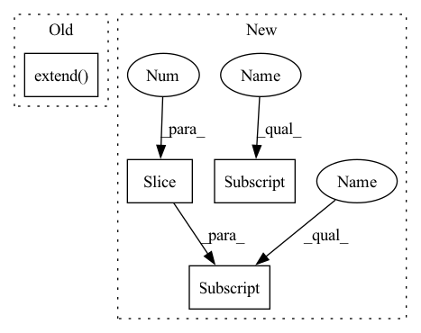

Pattern ID :11722
Before Change
penwidth="2"),
engine="dot"
)
g.body.extend( ["randkdir=LR"])
g.node("c_{k-2}", fillcolor="darkseagreen2")
g.node("c_{k-1}", fillcolor="darkseagreen2")
assert len(genotype) % 2 == 0After Change
for _ in range(2):
op, x_i = genotype[i]
s.node(str(i), label=op, fillcolor="ghostwhite")
g.edge(xs[x_i] , str(i))
g.edge(str(i),"add"+str(node))
i += 1
xs.append("add"+str(node))
g.node("concat", label="C", fillcolor="palegoldenrod")
for name in xs[-3:] :
g.edge(name, "concat")
g.node("y", fillcolor="cyan3", shape="plaintext")
g.edge("concat","y")In pattern: SUPERPATTERN
Frequency: 3
Non-data size: 4
Instances Fragment ID: 39545598
Project Name: woodywff/nas_3d_unet
Commit Name: a545a3bf9ef55ec3f9d7881f84079f44027753e6
Time: 2020-04-07
Author: woodywff@aliyun.com
File Name: helper.py
M Class Name: AnonimousClass
N Class Name: AnonimousClass
M Method Name: visualize(4)
N Method Name: visualize(4)
M Parent Class:
N Parent Class:
M File Name: helper.py
N File Name: helper.py
M Start Line: 31
M End Line: 70
N Start Line: 34
N End Line: 71
Before Change
// might be expensive though
note_ons = [(n.start, n.pitch, n.velocity, program) for n in inst.notes]
note_offs = [(n.end, n.pitch, 0, program) for n in inst.notes]
inst_events.extend( note_ons+note_offs)
if len(inst_events) < 64:
return
time, pitch, vel, prog = zip(*sorted(inst_events))
delta = torch.FloatTensor([0, *time]).diff(1)After Change
nbp[n.pitch].append(n)
// shorten all notes so they end 2*$margin before next (within pitch)
for seq in nbp.values():
for i,n in enumerate(seq[:-1] ):
max_end = seq[i+1] .start-2*time_margin
if n.end > max_end:
n.end = max_end
// and flatten again Fragment ID: 39545597
Project Name: intelligent-instruments-lab/iil-python-tools
Commit Name: 78c2ab9e98adc304bebc8cff2541364d27d91dab
Time: 2022-04-15
Author: victor.shepardson@gmail.com
File Name: notepredictor/scripts/lakh_prep_multitrack.py
M Class Name: AnonimousClass
N Class Name: AnonimousClass
M Method Name: process(1)
N Method Name: process(1)
M Parent Class:
N Parent Class:
M File Name: notepredictor/scripts/lakh_prep_multitrack.py
N File Name: notepredictor/scripts/lakh_prep_multitrack.py
M Start Line: 19
M End Line: 38
N Start Line: 22
N End Line: 50
Before Change
else:
pil_images = []
for intermediate_img in intermediates:
pil_images.extend( list(map(T.ToPILImage(), intermediate_img.unbind(dim = 0))))
return pil_images // now you have a bunch of pillow images you can just .save(/where/ever/you/want.png)
def p_losses(self, unet, x_start, times, *, noise_scheduler, lowres_cond_img = None, lowres_aug_times = None, text_embeds = None, text_mask = None, noise = None, times_next = None):After Change
assert not (not self.condition_on_text and exists(text_embeds)), "imagen specified not to be conditioned on text, yet it is presented"
assert not (exists(text_embeds) and text_embeds.shape[-1] != self.text_embed_dim), f"invalid text embedding dimension being passed in (should be {self.text_embed_dim})"
outputs = []
is_cuda = next(self.parameters()).is_cuda
device = next(self.parameters()).device
lowres_sample_noise_level = default(lowres_sample_noise_level, self.lowres_sample_noise_level)
for unet_number, unet, channel, image_size, noise_scheduler in tqdm(zip(range(1, len(self.unets) + 1), self.unets, self.sample_channels, self.image_sizes, self.noise_schedulers)):
context = self.one_unet_in_gpu(unet = unet) if is_cuda else null_context()
with context:
lowres_cond_img = lowres_noise_times = None
shape = (batch_size, channel, image_size, image_size)
if unet.lowres_cond:
lowres_noise_times = noise_scheduler.get_times(batch_size, lowres_sample_noise_level, device = device)
lowres_cond_img = resize_image_to(img, image_size)
lowres_cond_img, _ = noise_scheduler.q_sample(x_start = lowres_cond_img, t = lowres_noise_times, noise = torch.randn_like(lowres_cond_img))
shape = (batch_size, self.channels, image_size, image_size)
img = self.p_sample_loop(
unet,
shape,
text_embeds = text_embeds,
text_mask = text_masks,
cond_scale = cond_scale,
lowres_cond_img = lowres_cond_img,
lowres_noise_times = lowres_noise_times,
noise_scheduler = noise_scheduler
)
outputs.append(img)
if exists(stop_at_unet_number) and stop_at_unet_number == unet_number:
break
output_index = -1 if not return_all_unet_outputs else slice(None) // either return last unet output or all unet outputs
if not return_pil_images:
return outputs[output_index]
if not return_all_unet_outputs:
outputs = outputs[-1:]
pil_images = list(map(lambda img: list(map(T.ToPILImage(), img.unbind(dim = 0))), outputs))
return pil_images[output_index] // now you have a bunch of pillow images you can just .save(/where/ever/you/want.png) Fragment ID: 39545596
Project Name: lucidrains/imagen-pytorch
Commit Name: bfe761b52c93f53c1a961c0912bed3b33042382c
Time: 2022-06-11
Author: lucidrains@gmail.com
File Name: imagen_pytorch/imagen_pytorch.py
M Class Name: Imagen
N Class Name: Imagen
M Method Name: sample(11)
N Method Name: sample(11)
M Parent Class: nn.Module
N Parent Class: nn.Module
M File Name: imagen_pytorch/imagen_pytorch.py
N File Name: imagen_pytorch/imagen_pytorch.py
M Start Line: 1443
M End Line: 1511
N Start Line: 1441
N End Line: 1507